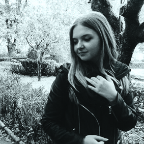
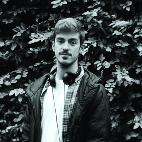

SOBRE NÓS

A andri é burra!

José é um futuro designer bastante dedicado, trabalhador e perfecionista apesar de toda a preguiça que existe dentro dele. Ele cativa toda a gente com as suas várias piadas, o seu lado rud-ó-divertido e já para não falar do furor que ele faz com o seu ananás tatuado no antebraço (melhor decisão que ele já tomou). Para além do seu interesse em design gráfico, este procura bastante aumentar o seu conhecimento sobre UI/UX design e deseja no futuro poder continuar a trabalhar nessa área.